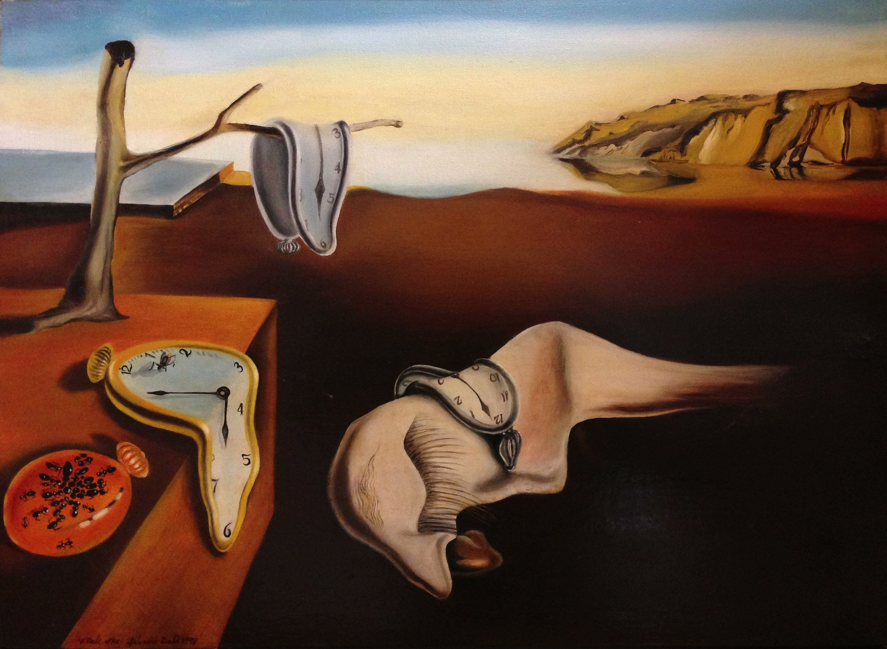

Sürrealizm Nedir?
Sürrealizm, 1920'lerde ortaya çıkan ve bilinçaltı düşüncelerin, hayal gücünün ve rüyaların sanat yoluyla ifade edilmesini savunan bir sanat akımıdır. Akımın öncüsü André Breton'dur ve sürrealist sanatçılar, mantık dışı görüntüler ve soyut temalarla gerçekliğin sınırlarını zorlamayı amaçlamışlardır. Sürrealist sanat, genellikle sıradışı ve bazen rahatsız edici imgelerle doludur. Salvador Dalí, René Magritte ve Max Ernst gibi sanatçılar, sürrealizmin en tanınan temsilcilerindendir.
